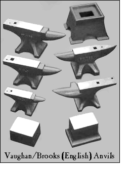

(See Full Image.)
The anvil is the primary tool of blacksmiths and one of the few tools
that most blacksmiths will purchase. The first metalsmiths probably used flat rocks but as the world
entered the iron age, iron anvils came into being. These were probably simple blocks of iron
with a flat working surface. Still, there is evidence that the early Viking smiths used flat rocks
for their work. The anvil went through a long period of development and there was no common
or standard type through the western world.
Since most of early iron work was directed to the making of arms and armor,
the armourers developed anvils that suited their work. It was the Germans who improved steel and
therefore they produced the finest armor. Their knowledge of metal led to excellent anvils. Through
the centuries, there evolved a European or continental type of anvil that is represented by the double
horn anvil but without a table.
The English also developed an anvil, but with a style all their own. The English
controlled the market to the American colonies and in the mid-1700s, the London style came into being.
Even after the Revolutionary War, the London style continued to be imported in such numbers, that in
time it has also been called, the London/American style. It is today an American favorite.
|

Anvils have been made for many special uses ranging from the smallest jewelers
anvils to the heaviest industrial anvils. Of course, silversmiths don’t use heated metal on their anvils and swages.
Rather, they anneal their metal and work it cold. It is the blacksmith who works the metal hot, and not all blacksmiths
preformed the same tasks.
The old Mousehole Forge in Sheffield England made five types of anvils:*
1. The London shape anvil
2. The double pike anvil
3. Coachsmiths’ anvil
4. Farriers’ anvil
5. Sawmakers’ anvil
Additionally, there is the bench anvil - made to ge used on a workbench, the bridge anvil, and
the coopers’ anvil.
The image to the left shows traditional single and double bick (horn) anvils, a cast iron
anvil stand, and two Saw Makers anvils,
( from Vaughn/Brooks Lye, England). Western Saw Inc. (Oxnard, California) also makes Saw Makers anvils.
For Anvil Vises, please see our Tools Page
| |
Credits:
Two Medieval Armourers and the Anvil Bench graphic, detail from an
engraving of the anvil bench of sixteenth century armourer, Conrad (Konrad) Seusenhofer.
Medieval Square Anvil and Medieval Double Horn Anvil graphics
redrawn from The Art of Blacksmithing by Alex W. Bealer, p. 65.
All Colonial graphics except the black and white Stake Anvil redrawn
from Museum of Early American Tools by Eric Sloan, pp.90, 92.
JHM Anvils, NC Tool Co., Nimba, Peddinghaus, Sterling, and Vaughn/Brooks graphics from
the makers’ advertisements, and are copyrighted by them.
* The listing of the five Mousehole Forge anvils was complied by David Poppke and
presented online by David W. Wilson and the North
Texas Blacksmiths Association.
The primary display font use on this page is “Webster Roman” which
was the typeface use by Noah Webster in his famous 1828 dictionary. The font is available
from Walden Font Co.
|
|
{kind=link}